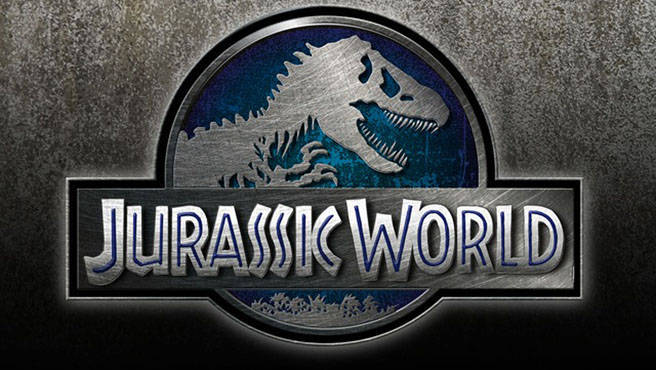

jurassic World è un film del 2015 co-scritto e diretto da Colin Trevorrow.
La pellicola è il quarto capitolo del franchise di Jurassic Park, ispirato all'omonimo romanzo di Michael Crichton.
Sequel di Jurassic Park III (2001), è rimasto in development hell per oltre un decennio. Dopo la regia dei primi due film, Steven Spielberg rimane come produttore esecutivo.
Il film ha ricevuto recensioni generalmente positive da parte della critica e ha incassato 1,6 miliardi di dollari al botteghino, divenendo all'epoca il terzo maggiore incasso nella storia del cinema dopo Avatar e Titanic; attualmente occupa l'ottavo posto.
Un sequel, intitolato Jurassic World - Il regno distrutto, è nel 2018. Una serie animata spin-off/midquel intitolata Jurassic World - Nuove avventure (Jurassic World: Camp Cretaceous) è stata distribuita nel 2020.Un altro sequel, intitolato Jurassic World - Il dominio, è uscito nel 2022.

Trama
Ventidue anni dopo l'incidente al Jurassic Park, il sogno di John Hammond è diventato realtà. Isla Nublar dispone finalmente di un parco a tema completamente funzionante con migliaia di ingressi al giorno: il Jurassic World, fondato dalla InGen con l'appoggio del magnate Simon Masrani, proprietario della Masrani Global, che ha ricevuto l'incarico di portare avanti il progetto da Hammond stesso, poco prima della sua morte.
In occasione delle vacanze di Natale, il giovane Gray Mitchell e suo fratello maggiore Zach vengono mandati in viaggio dai genitori, prossimi al divorzio, sull'isola per passare le vacanze in compagnia della zia Claire, capo responsabile del parco. Quest'ultima, però, è troppo occupata dal lavoro, quindi affida i nipoti a Zara, la sua assistente. Sebbene a partire dal 2005, anno di apertura del Jurassic World, gli incassi siano sempre stati elevati, nel corso del tempo vengono registrati cali nelle vendite, in quanto ormai il mondo si è abituato all'esistenza dei dinosauri, e per contrastare questo andamento, Claire e i genetisti della InGen, guidati dal dottor Henry Wu, creano una nuova specie di dinosauro combinando il DNA di vari predatori preistorici con quelli di altri animali. Il signor Masrani convoca Owen Grady, ex-marine e domatore di Velociraptor, per visionare la nuova creatura prima di rivelarla al pubblico. Nel frattempo Vic Hoskins, il capo della sicurezza della InGen, intende approfittare delle quattro Raptor di Owen (Blue, Echo, Charlie e Delta) per adoperarle in ambito bellico. L'etologo e addestratore non approva questo proposito spiegando che, sebbene esse lo considerino il loro maschio alfa, non possono essere addomesticate, in quanto il suo programma non prevede di controllare e comandare le bestie, ma avere un reciproco rispetto con loro, che fa sì che gli siano leali.
La nuova specie di dinosauro geneticamente modificato, battezzata Indominus rex, dimostra estrema aggressività e intelligenza. Owen, condotto da Claire al sito della nuova attrazione, esprime il suo disappunto nel constatare che l'animale sia stato cresciuto in isolamento e privato di un simile con cui socializzare. La donna ammette che un secondo esemplare era stato creato, in modo da evitare problemi di solitudine, ma poi è stato divorato da quello attuale. Non riuscendolo a vedere o a rilevarlo strumentalmente all'interno dell'habitat, i due ne sospettano la fuga, perciò mentre Owen entra insieme a due uomini della sicurezza per indagare, Claire rientra al centro di controllo per tracciare l'animale dal satellite. In realtà il dinosauro è ancora nel recinto e si è reso invisibile ai sensori di rilevamento termico visivo grazie alle sue capacità genetiche. Le due guardie subiscono un'imboscata e vengono divorate. L'Indominus abbandona poi la gabbia mentre Owen riesce astutamente a sfuggirgli, cospargendosi di benzina sotto una jeep per non essere fiutato. Masrani invia un'unità di mercenari per catturare la bestia, ma, quando questa uccide metà della squadra, Claire ordina l'annullamento dell'operazione e l'evacuazione dell'isola.
Nel frattempo Gray e Zach sfuggono alla supervisione di Zara per andarsene per conto proprio, mancando così la ricezione dell'ordine di evacuazione. A bordo di una Girosfera abbandonano la valle per addentrarsi in una zona boschiva fuori dal percorso dei visitatori. Poco dopo si imbattono nell'Indominus, che dapprima affronta e uccide un Anchilosauro, successivamente li assale distruggendo il loro mezzo. I due trovano la salvezza gettandosi in una cascata e addentrandosi nella giungla raggiungono le rovine del centro visitatori del Jurassic Park originale. Qui riparano una vecchia Jeep con la quale tornano al villaggio turistico. Intanto Owen e Claire sono sulle loro tracce, ma trovano le carcasse di un branco di Apatosauri uccisi dal predatore: Grady comprende che l'ha fatto per puro divertimento e non per soddisfare la propria fame. Masrani e i soldati la rintracciano sorvolando l'isola in elicottero, ma il mostro penetra all'interno di una voliera e libera degli Pterosauri che attaccano i piloti e fanno precipitare il mezzo. Quando Gray e Zach si ricongiungono con Zara, gli pterosauri assediano la zona turistica causando la morte di molte persone (compresa Zara che viene divorata dal Mosasauro). Owen e Claire si ricongiungono finalmente coi ragazzi e i volatili vengono narcotizzati dalle guardie.
Con la morte di Masrani, Hoskins assume la direzione del parco e ordina di utilizzare i quattro Raptor per stanare e abbattere l'Indominus; Owen accetta con riluttanza. L'animale viene rintracciato nella giungla. Tutti prendono posizione pronti a fare fuoco, ma, poiché l'obiettivo possiede nel DNA componenti di quello del Velociraptor, esso comunica con i quattro e ne assume il comando, aizzandoli contro gli umani: si scatena uno scontro in cui molti uomini perdono la vita. Owen sembra ristabilire un legame con Charlie, ma un mercenario la uccide con un colpo di bazooka. Claire e i ragazzi fuggono con un furgone seminando gli altri animali. Nel frattempo Hoskins conduce il Dr. Wu all'elicottero con alcuni embrioni cosicché possa lasciare incolume Isla Nublar. Owen, Claire e i ragazzi intercettano Hoskins nel laboratorio del centro visitatori e lo colgono intento a prelevare altri embrioni di dinosauro. Questi, prima di venire ucciso da Delta, rivela loro che il Jurassic World è solo una copertura per nascondere il suo progetto di creare dei dinosauri da usare come armi biologiche.
I quattro fuggono da Delta correndo all'esterno dell'edificio, ma vengono accerchiati da Blue e Echo. I raptor tuttavia esitano ad attaccare, per via del loro legame col vecchio alfa. Owen ristabilisce il legame liberandoli dai collari con telecamera applicati da Hoskins. L'Indominus emerge dalla giungla e ordina al branco di attaccare gli umani, ma i tre disobbediscono e Blue viene scaraventata contro un muro, con lo schianto che le fa perdere i sensi. Echo e Delta aggrediscono l'avversaria ma, incapaci di contrastarlo, vengono uccise immediatamente.
Claire, in un ultimo gesto disperato, libera il T. rex (lo stesso apparso nel primo film[8]) e lo conduce dall'Indominus. I due giganti lottano per la supremazia inizialmente dominata dall'ibrido, che riesce a sopraffare l'avversario. Atterrato il Tirannosauro, l'Indominus si appresta a darle il colpo di grazia, ma grazie all'intervento dell'ultimo raptor Blue, che si scaglia contro l'ibrido, il Tyrannosaurus ha modo di contrattaccare. I due dinosauri lottano insieme contro l'Indominus, che dopo essere stato ferito gravemente viene spinto dal Tirannosauro sul bordo della laguna del Mosasauro, il quale emergendo di sorpresa lo azzanna al collo e lo trascina con sé sott'acqua, affogandolo.
Il tirannosauro si allontana zoppicante, ma vincitrice, e Blue, prima di addentrarsi nella vegetazione, rivolge un ultimo sguardo di addio all'uomo che l'ha allevata. Il giorno seguente i sopravvissuti vengono trasferiti in Costa Rica. Qui Zach e Gray si riconciliano con i genitori mentre Owen e Claire si allontanano insieme. Isla Nublar viene nuovamente conquistata dai dinosauri liberi: il tirannosauro sale sulla cima dell'isola e la reclama, ruggendo, ancora una volta.